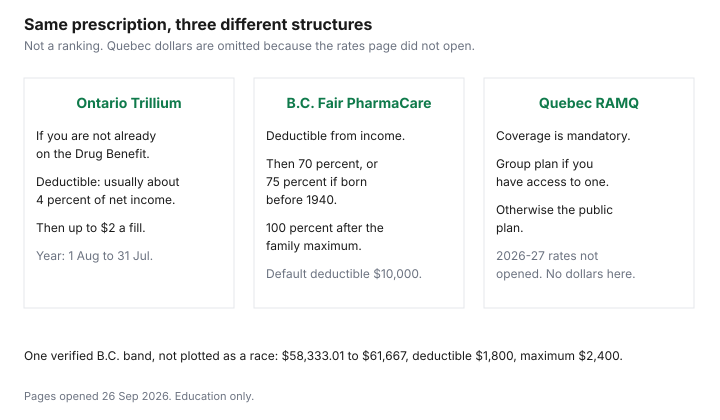

Healthcare · Canada
Provincial Drug Plans Across Canada Compared: Deductibles, Co-Pays and Who Is Covered (2026)
Move provinces, or retire, and the drug plan changes even when the prescription does not. There is no national deductible. Four jurisdictions have a narrow national pharmacare agreement for listed contraception and diabetes products. Everyone else uses a provincial or territorial plan, a workplace plan, or cash. This comparison does not rank provinces. A blank dollar means the official rates page did not open on 26 Sep 2026. Confirm the number on the link before you budget it.
Key takeaways
- Ontario seniors on the Drug Benefit pay a $100 deductible per program year, then up to $6.11 a fill, unless the Seniors Co-Payment Program removes the deductible and caps the co-pay at $2.
- B.C. Fair PharmaCare uses family net income from two years earlier. After the deductible it pays 70 percent, or 75 percent if someone in the family was born before 1940, then 100 percent after the family maximum. Unregistered families default to a $10,000 deductible.
- On the regular assistance table updated 1 May 2026, family net income from $58,333.01 to $61,667 has a deductible of $1,800 and a family maximum of $2,400.
- Quebec requires drug insurance. The RAMQ rates page did not open for this guide, so no 2026-27 premium or deductible is printed.
- National pharmacare has not replaced these plans. It is listed for B.C., Manitoba, P.E.I., and Yukon only, on the page dated 24 Apr 2026.
Why drug coverage varies so much by province, and where national pharmacare fits in
Each province and territory designs its own public drug plan. Some enrol seniors automatically. Some scale a deductible to income. Quebec makes coverage mandatory and uses the public plan when a private group plan is not available. The national pharmacare guide is the short list of what the federal agreements actually pay: listed contraception and diabetes products in B.C., Manitoba, P.E.I., and Yukon. That list does not wipe out Fair PharmaCare's deductible or the Ontario Drug Benefit's $100. If your drug is not on the annex, you are on the provincial rules below.
Workplace plans sit on top of this map, or instead of the public plan, depending on the province. The workplace drug guide is formularies and prior authorization. Two employer plans are the coordination guide. This page is the public layer you meet when the workplace plan ends, when you move, or when the workplace plan does not list the drug.
Ontario: ODB, Trillium and OHIP+
The Ontario Drug Benefit is the public formulary: more than 5,900 listed drugs and almost 1,500 more through Exceptional Access, on the coverage page updated 18 Aug 2026. You can be on it before 65 if you live in a long-term care home or a community home for opportunity, if you are 24 or younger and not covered by a private plan (OHIP+), if you receive professional home and community care, if you receive Ontario Works or ODSP, or if you are enrolled in Trillium. At 65, enrolment is automatic on the first day of the month after your birthday. The senior co-payment guide is the $100 deductible, the co-pay of up to $6.11, the prorated first year, and the Seniors Co-Payment Program at $25,480 or $42,290 for 2026/27.
Trillium is for Ontario residents with a health card who do not already qualify for ODB, who do not have a plan that pays 100 percent of their drugs, and who spend about 4 percent or more of after-tax household income on prescriptions. The page updated 11 Feb 2026 says the deductible is usually about 4 percent of household net income, line 23600 minus registered disability savings plan income. After the deductible, the co-pay is up to $2 a fill. The program year is 1 Aug to 31 Jul, split into quarters. "About 4 percent" is the page's wording. This article does not turn it into a exact dollar for a $60,000 household, because the page does not call 4 percent exact. Apply by 30 Sep if you want reimbursement for the previous program year. That September date is Trillium's, and the senior co-payment program has its own version of it.
OHIP+ is the under-25 door when a private plan does not cover the child or young adult. A family with a workplace plan should not assume OHIP+ pays first. Tell the pharmacist which plan exists. Fills outside Ontario are not ODB fills.
BC Fair PharmaCare: income-based deductibles and family maximums
Fair PharmaCare is income-tested. The calculation page, updated 1 May 2026, says coverage is recalculated when you register and on 1 Jan each year, using family net income from two years earlier because the latest return is not in yet. Your 2026 assistance is based on your 2024 return: line 23600 for you and your spouse, minus line 12500. Families with less income get more help. A family can be one person.
The plan page, updated 27 Aug 2026, says you pay eligible costs until you meet the deductible. PharmaCare then pays 70 percent of eligible costs, or 75 percent if a family member was born before 1940. After the family maximum, it pays 100 percent for the rest of the year. If you do not register, or your income cannot be verified, the deductible and the family maximum are each set at $10,000. Register, and return the CRA consent, or you are on that default.
The regular assistance table, on the page updated 1 May 2026, prints bands rather than a single $60,000 row. The band $58,333.01 to $61,667.00 shows a family deductible of $1,800 and a family maximum of $2,400. That is the regular table, not the enhanced table for a family member born before 1940. An illustrative $2,000 of eligible drug cost in a year, for a household in that band, meets the $1,800 deductible and leaves $200. PharmaCare would then pay 70 percent of that $200, which is $140, and the family would pay $60 of it. Total family spend on that $2,000 would be $1,860, still under the $2,400 maximum, so the 100 percent tier would not start. That arithmetic uses only the verified band and the verified 70 percent. It is illustrative. It is not your letter. Enhanced assistance, income reviews after a 10 percent drop, and the monthly deductible payment option are separate pages. Dispensing-fee rules were not copied into this total.
Québec RAMQ: mandatory coverage, the 2026–27 premium and the monthly deductible
Quebec does not treat drug insurance as optional. If you have access to a private group plan, through work or a spouse's work, you join that plan. If you do not, you are on the public plan run by the Régie de l'assurance maladie du Québec. The Quebec personal-finance guide is the wider set of rules that do not match other provinces. This row is only the drug plan.
The RAMQ rates page did not open on 26 Sep 2026, so this guide does not print a 2026-27 premium, deductible, coinsurance, or annual maximum. Open the rates page before you budget a dollar. The structural point that stands is mandatory enrolment: a private group plan if you have access to one, otherwise the public plan.
A workplace plan in Quebec is not a bonus on top of RAMQ for people who are eligible for the private plan. It is the plan you are required to take. Coordination questions still happen when two private plans exist. Use the coordination guide, and ask the insurer how RAMQ-eligible people are handled. This page does not restate that exception from memory.
Prairies and Atlantic Canada: senior and catastrophic plans (verify at draft)
The pages below responded or are the ministry's own address. None of them was mined for a deductible on 26 Sep 2026. Naming the plan without a number is deliberate. A wrong deductible is worse than a link.
Alberta: Coverage for Seniors, and Non-Group Coverage, both on alberta.ca. Saskatchewan: the provincial drug plan, on saskatchewan.ca. Manitoba: Pharmacare, on gov.mb.ca, which is separate from the Enhanced Pharmacare Program's no-cost list for birth control and diabetes. New Brunswick: the provincial drug plan through the Department of Health. Nova Scotia: Pharmacare, on novascotia.ca. Prince Edward Island: drug cost assistance programs on princeedwardisland.ca, plus the national pharmacare agreement for listed products. Newfoundland and Labrador: the prescription drug program at gov.nl.ca. The Northwest Territories, Nunavut, and Yukon run territorial benefits. Yukon is also on the national pharmacare list. Territorial rate pages were not opened, so no northern deductible is printed.
Catastrophic coverage, where a province uses that word, means the public plan starts paying a larger share after your spending is high relative to income. It is not a promise that the first prescription is free. Ask the ministry for the deductible, the co-pay, and the annual maximum, and write the date you were told.
| Province or territory | Plan names | What this guide will put a number on | Where to read the rest |
|---|---|---|---|
| Ontario | ODB, Trillium, OHIP+, Seniors Co-Payment Program | Seniors: $100 then up to $6.11, or up to $2 with no deductible if enrolled for 2026/27. Trillium: usually about 4 percent, then up to $2. Not an exact $60,000 example. | ontario.ca drug coverage |
| British Columbia | Fair PharmaCare. Plan NP for listed national-pharmacare products. | 70 percent after the deductible, 75 percent if a family member was born before 1940, then 100 percent. Default $10,000. Regular band $58,333.01 to $61,667: deductible $1,800, maximum $2,400. | Fair PharmaCare |
| Quebec | Private group plan if you have access, otherwise RAMQ public plan. Coverage is mandatory. | No premium, deductible, or coinsurance. The rates page did not open. | RAMQ rates |
| Alberta | Coverage for Seniors. Non-Group Coverage. | No dollar copied. | Coverage for Seniors. Non-Group Coverage. |
| Saskatchewan | Saskatchewan Drug Plan | No dollar copied. | saskatchewan.ca drug plan |
| Manitoba | Pharmacare. Enhanced program for listed birth control and diabetes medications. | No Pharmacare deductible copied. Enhanced program effective 15 Apr 2025 for that no-cost list. | Manitoba Pharmacare |
| Atlantic and the North | New Brunswick, Nova Scotia Pharmacare, P.E.I. drug cost assistance, Newfoundland and Labrador prescription program, territorial benefits. P.E.I. and Yukon also have national pharmacare agreements. | No deductible copied. | P.E.I. drug cost assistance. Nova Scotia Pharmacare. Newfoundland and Labrador prescription program. New Brunswick and the territories are named above without a rate link that opened. |

Moving provinces or retiring: gaps to plan for
A prescription does not transfer. Ontario Drug Benefit pays for fills in an Ontario pharmacy. Fair PharmaCare registration is a B.C. file. RAMQ enrolment is a Quebec file. When you move, ask the new province what starts on the day you become eligible for that health card, and what waits. Budget the gap in cash or with a workplace plan that still lists you. The retiree bridge is the same problem at retirement: the workplace plan may end years before the provincial senior plan starts, and the start date is not the birthday in every province. Ontario's is the first of the next month. Do not copy that clock to Alberta or B.C.
Retiring inside one province is simpler and still not automatic. Apply for the Seniors Co-Payment Program if the income test fits. Register for Fair PharmaCare before you need the lower deductible. In Quebec, losing the group plan means telling RAMQ, not assuming the public premium starts itself on the last day of work. The gap guide prices an individual plan against cash and the medical expense credit for the months in between. National pharmacare does not cover that interval unless you are in one of the four jurisdictions and the drug is on the annex.
Formularies are public. Search the provincial list, or ask the pharmacist to, before you move a three-month supply across a border the old plan will not pay. Exceptional Access in Ontario, Special Authority in B.C., and the exception process in another province are not interchangeable approvals. A yes in one province is not a yes in the next.
Sources & date stamps
- Ontario, Get coverage for prescription drugs, updated 18 Aug 2026, and Get help with high prescription drug costs, updated 11 Feb 2026. ODB, OHIP+, Trillium "about 4 percent," co-pay up to $2. Opened 26 Sep 2026.
- B.C., How your Fair PharmaCare coverage is calculated, updated 1 May 2026. Income from two years prior. Regular band $58,333.01 to $61,667: deductible $1,800, family maximum $2,400. Plan page updated 27 Aug 2026: 70 percent, 75 percent if born before 1940, 100 percent after the maximum, $10,000 default.
- RAMQ rates page, not opened on 26 Sep 2026. No 2026-27 dollars used. Link retained so you can open it.
- Health Canada, who's covered, page details 24 Apr 2026. Four pharmacare jurisdictions only.
- Alberta Coverage for Seniors and Non-Group Coverage, Saskatchewan drug plan, Manitoba Pharmacare, Nova Scotia Pharmacare, P.E.I. drug cost assistance, and Newfoundland and Labrador prescription pages responded or are the ministry URLs. No rate was copied from them on this pass.
Frequently asked questions
Why is drug coverage so different between provinces?
Each province and territory runs its own plan. Ontario combines a formulary with a senior deductible, Trillium, and OHIP+. British Columbia uses Fair PharmaCare, which scales a deductible and a family maximum to income. Quebec makes drug insurance mandatory and uses the public plan when you do not have a private group plan. National pharmacare adds listed contraception and diabetes products only in B.C., Manitoba, P.E.I., and Yukon. It does not standardize the other drugs.
Do I have to join my province's drug plan?
It depends on the province. In Quebec, drug insurance is mandatory: the group plan if you have access to one, otherwise the RAMQ public plan. In B.C., Fair PharmaCare is something you register for, and if you do not, the deductible defaults to $10,000. In Ontario, seniors are enrolled in the Drug Benefit automatically, and Trillium is an application if you are not already on ODB. Do not copy one province's rule to another.
What happens to my drug coverage if I move provinces?
The old plan generally stops paying for fills in the new province. Ontario Drug Benefit is explicit that fills outside Ontario are not covered. You register with the new provincial plan and you ask what starts on the day your new health coverage starts. A workplace plan may cover the gap if it still lists you. An approval such as Exceptional Access or Special Authority does not move with you.
Does national pharmacare change these plans?
Only for listed contraception and diabetes products, and only in the four jurisdictions on the who's covered page dated 24 Apr 2026. Ontario's $100 deductible, Fair PharmaCare's income test, and Quebec's public plan are still there for everything else. Read the annex before you assume a diabetes drug is on the free list.
Where do I check my province's formulary?
On the provincial plan page linked in the table, or by asking the pharmacist to run the DIN. Ontario's search is linked from the drug coverage page. B.C. uses PharmaCare's list and, for some drugs, Special Authority. Quebec uses the RAMQ list of medications. This article does not copy those lists. A drug covered in one province can be exceptional, limited, or absent in the next.